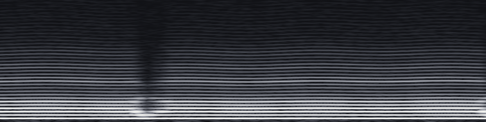

ナギ
›
Normal
A3
CVVC
›
原音設定
検索・コマンド
⌘K
音源
ナ
ナギ
Normal
A3
CVVC
G4
CVVC
Whisper
A3
CVVC
G4
CVVC
C5
連続音
Growl
A3
単独音
C5
単独音
ハ
ハルカゼ
新
新しい音源 2
新しい音源
⌘N
ナギ
音源のページ
⌘0
収録
曲バンク
原音設定
配布
⌘F
未読
214
エイリアス
確信度
ま
0.93
み
0.90
む
0.86
め
0.88
も
編集済み
0.91
や
0.92
ゆ
0.88
よ
0.90
ら
0.41
り
編集済み
0.83
る
0.58
れ
0.86
ろ
0.79
わ
0.43
を
0.91
ん
0.95
a r
0.74
a k
0.89
ら
確信度
0.41
ら ら り る れ ろ ん わ
テイク 1
テイク 2

2k
4k
6k
左
OL
先行
固定
右
1,100
1,200
1,300
1,400
1,500
1,600
1,700
1,800 ms
左
左ブランク
ms
OL
オーバーラップ
ms
先行
先行発声
ms
固定
固定範囲
ms
右
右ブランク
ms
この行を録り直す
取り消す
保存